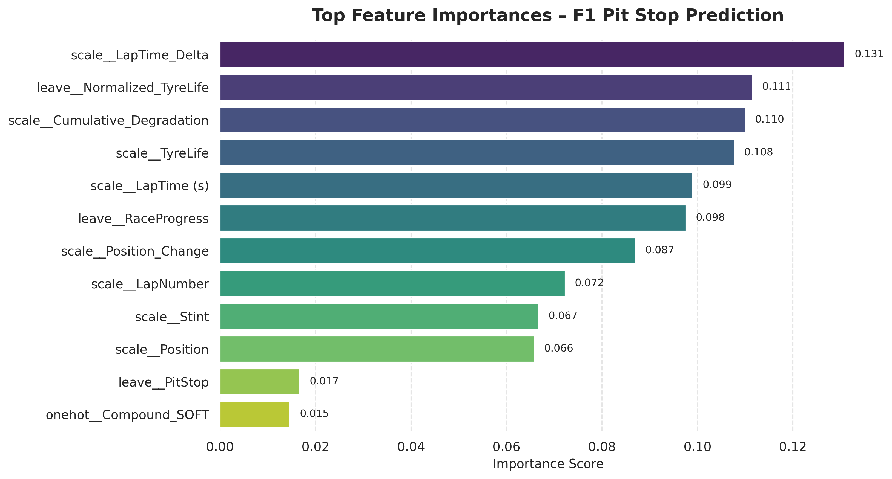

Predicting next-lap pit stop decisions in Formula 1 using machine learning.
This project uses machine learning to predict whether a driver will make a pit stop on the next lap in Formula 1 race data.
The model learns from race telemetry such as tyre wear, lap performance, and race context to identify patterns behind strategic pit decisions.

Pit stop decisions are primarily driven by performance degradation over time, particularly changes in lap time and tyre wear progression.
Rather than relying on static features like tyre compound, the model captures how race performance evolves—reflecting real-world strategy dynamics.
Python Pandas Seaborn Scikit-learn